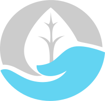

For now just choose Preferable Color:

Red is the color at the end of the visible spectrum of light, next to orange and opposite violet. It has a dominant wavelength of approximately 625–740 nanometres. It is a primary color in the RGB color model and the CMYK color model, and is the complementary color of cyan. Reds range from the brilliant yellow-tinged scarlet and vermillion to bluish-red crimson, and vary in shade from the pale red pink to the dark red burgundy. The red sky at sunset results from Rayleigh scattering, while the red color of the Grand Canyon and other geological features is caused by hematite or red ochre, both forms of iron oxide. Iron oxide also gives the red color to the planet Mars. The red color of blood comes from the protein hemoglobin, while ripe strawberries, red apples and reddish autumn leaves are colored by anthocyanins.
wikipedia.org
Green is the color between blue and yellow on the visible spectrum. It is evoked by light which has a dominant wavelength of roughly 495–570 nm. In subtractive color systems, used in painting and color printing, it is created by a combination of yellow and blue, or yellow and cyan; in the RGB color model, used on television and computer screens, it is one of the additive primary colors, along with red and blue, which are mixed in different combinations to create all other colors. By far the largest contributor to green in nature is chlorophyll, the chemical by which plants photosynthesize and convert sunlight into chemical energy. Many creatures have adapted to their green environments by taking on a green hue themselves as camouflage. Several minerals have a green color, including the emerald, which is colored green by its chromium content.
wikipedia.org
Blue is one of the three primary colours of pigments in painting and traditional colour theory, as well as in the RGB colour model. It lies between violet and green on the spectrum of visible light. The eye perceives blue when observing light with a dominant wavelength between approximately 450 and 495 nanometres. Most blues contain a slight mixture of other colours; azure contains some green, while ultramarine contains some violet. The clear daytime sky and the deep sea appear blue because of an optical effect known as Rayleigh scattering. An optical effect called Tyndall scattering explains blue eyes. Distant objects appear more blue because of another optical effect called aerial perspective.
wikipedia.org